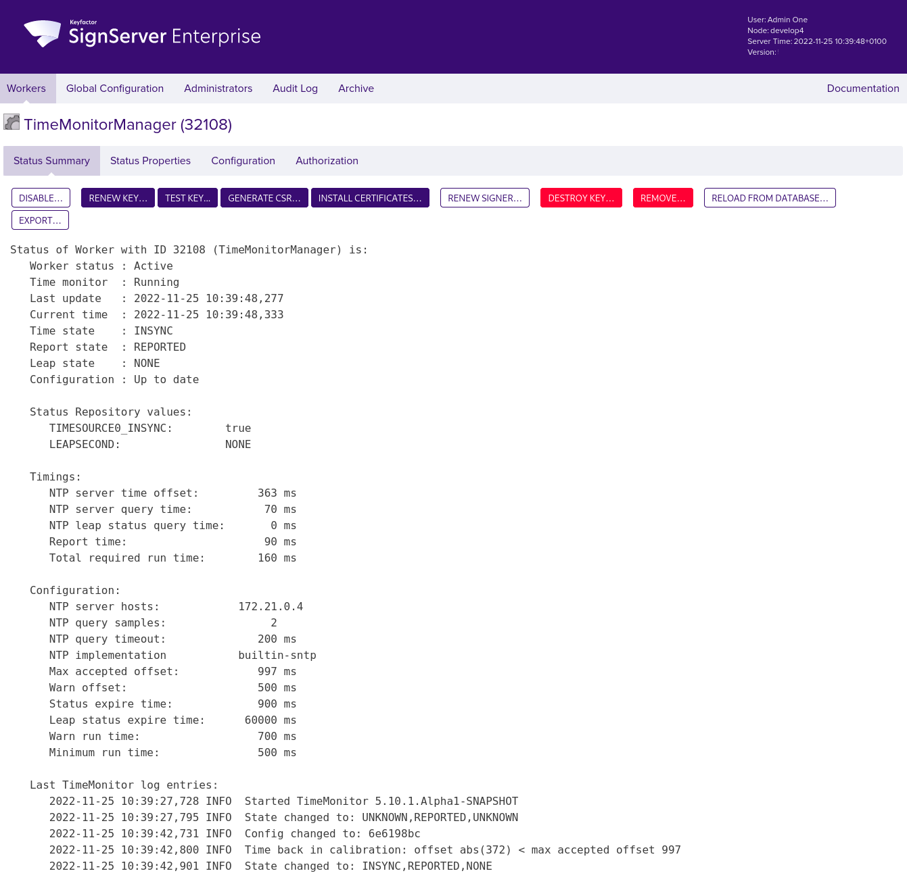

How to Configure TimeMonitor
enterprise
This provides an example of how you can set up TimeMonitor to monitor time synchronization when SignServer is used as a time stamp unit within a Time Stamp Authority (TSA) to generate digitally signed time stamps.
The following outlines the steps required to set up TimeMonitor and configure the Time Monitor Manager worker to view information about the state of the TimeMonitor. This example uses TimeMonitor's default built-in support for SNTP (Simple Network Time Protocol), not requiring the local system to have NTP commands installed. For more information on configuration options, see TimeMonitor Configuration.
Before you begin
This example assumes that you have installed the SignServer Enterprise binary distribution that includes the TimeMonitor application.
Start TimeMonitor
Start the TimeMonitor to run in the background:
$ bin/timemonitor-in-background.shThis will include the
conf/folder on the classpath.
Configure application properties
The file conf/timemonitor.properties includes configuration settings for the application. To configure the TimeMonitor application properties using the properties file, do the following:
Copy
conf/timemonitor.properties.sampletoconf/timemonitor.propertiesand open it for editing in a text editor.cp conf/timemonitor.properties.sample conf/timemonitor.propertiesConfigure the application properties in
conf/timemonitor.properties. The following shows a sample configuration:timemonitor.stateweb.enabled=truetimemonitor.stateweb.bindaddress=127.0.0.1timemonitor.stateweb.port=8980timemonitor.stateweb.threads=5timemonitor.stateweb.backlog=0signserver.process.url=http://localhost:8080/signserver/processsignserver.statuspropertiesworker.name=TimeMonitorManagersignserver.statusproperty.name=TIMESOURCE0_INSYNCsignserver.leapstatusproperty.name=LEAPSECONDsignserver.managedconfig=trueThe
signserver.managedconfig=trueis by default enabled and allows specifying the additional runtime properties using the SignServer TimeMonitorManager worker.
Configure Time Monitor Manager
To configure the Time Monitor Manager worker and view information about the state of the TimeMonitor:
To add a SignServer Time Monitor Manager worker, perform these steps:
Go to the SignServer Administration Web Workers page and click Add to add a new worker.
On the Add Worker / Load Configuration page, choose the method From Template.
In the Load From Template list menu, select the timemonitormanager.properties worker template and click Next.
Update the following in the configuration:
Set NAME to TimeMonitorManager
Set TIMESERVER.HOST to <A LOCAL NTP HOST>
Change TIMEMONITOR.DISABLED to false
Click Apply and verify that the new worker appears in the Workers list.
Click the TimeMonitorManager worker and inspect the status summary. For detailed information, see the Status output of the TimeMonitorManager.

Click Reload (multiple times as needed) until TimeMonitor log entries are displayed. Inspect the recent log entries, that look similar to the following:
2022-11-2510:39:42,731INFO Config changed to: 6e6198bc2022-11-2510:39:42,800INFO Time back in calibration: offset abs(372) max accepted offset9972022-11-2510:39:42,901INFO State changed to: INSYNC,REPORTED,NONEIn this example, the log output shows:
Time state is
INSYNC,that is the time is in sync as it was detected to be within the configured range.Report state is
REPORTED,that is the results were successfully published to SignServer.Leap state is reported to SignServer as
NONE,that is no leap second is scheduled at the next possible leap second occurrence. For more information on the TimeMonitor state types, see Logging and Monitoring.
TimeMonitor is now configured and you can continue with setting up your Time Stamp Signer worker to configure the time source.
Configure Time Stamp Signer
The following outlines how to configure the status reading local computer time source to allow the Time Stamp Signer to acquire the current time synchronized with a reliable time source. For more information, see Time Sources in SignServer and Time Stamp Signer.
The steps demonstrate how to set up your Time Stamp Signer worker and configure the time source:
Go to the SignServer Workers page, select your Time Stamp Signer worker, then click on the Configuration tab.
Click Add to add a new configuration property and set the property:
Set Name to TIMESOURCE
Set Value to org.signserver.server.StatusReadingLocalComputerTimeSource
Click Submit and save the changes.
Verify that your TimeStampSigner is ACTIVE.
Try to time stamp and verify that the current time can be acquired from the time source. For example, run a command like the following:
bin/signclienttimestamp -url"http://localhost:8080/signserver/tsa?workerName=<YourTimeStampSigner>"
You should now get a time stamp reply and time stamp request validated with status (Operation Okay).
Verify that you do not get a "Time source is not available" message. If the current time cannot be acquired from the time source, the Time Stamp Signer will not issue the time-stamp token and instead respond to the signing request with the failure message "Time source is not available". For more information, see Time Sources in SignServer.